**Homework 1 - Getting Started**
Student Name: Zhanyi Wu
Student ID Number: 22-737-266
(Note: please read the [supplementary](#supplementary) section first before working on this report.)
# Part 1: Normal Integrator
**Time spent on this task: 5 min **
**Describe your implementation of Normal Integrator.**
Just copy and paste the given code on nori webpage. Code works perfectly.
**Shading Normal Comparison: Ajax**
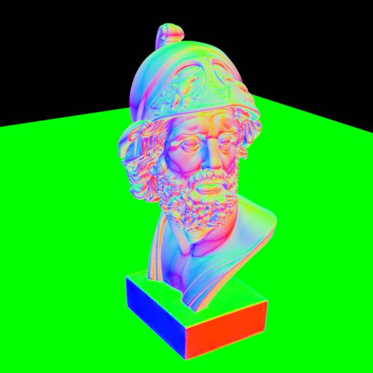
# Part 2: Non-Physical Integrators
## Average Visibility Integrator
**Time spent on this task: 20 min**
**Describe your implementation of this integrator.**
Here I take some time to view _warp.cpp_ and _ray.h_. After getting a rough knowledge of those data structure, just use given function to shoot a shadow ray.
If shadow ray does not intersect with scene, return 1, else return 0.
## Material Preview Integrator
**Time spent on this task: 20 min**
**Describe your implementation of this integrator.**
Take some time to view _bsdf.h_. Then follow the given instruction is enough for this task.
## Validation
**Average Visibility Comparison: Ajax**
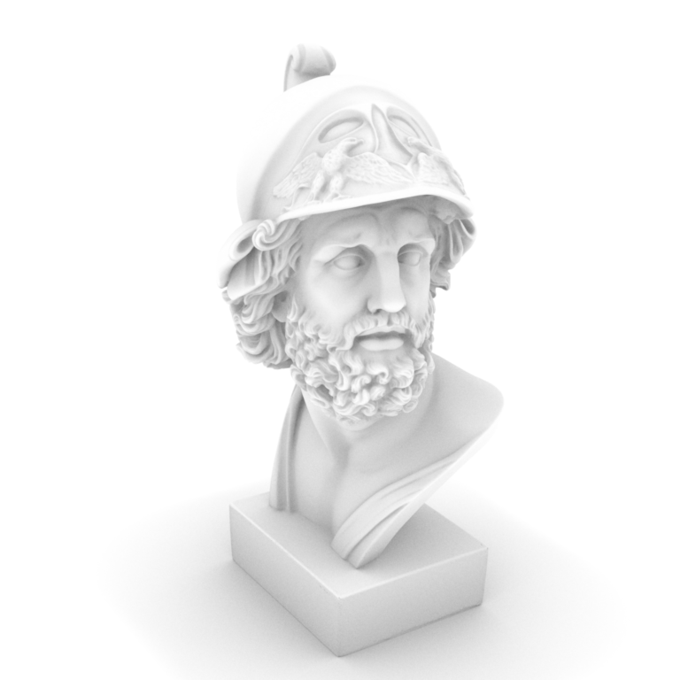
**Average Visibility Comparison: Sponza**
**Material Preview Comparison: Ajax**
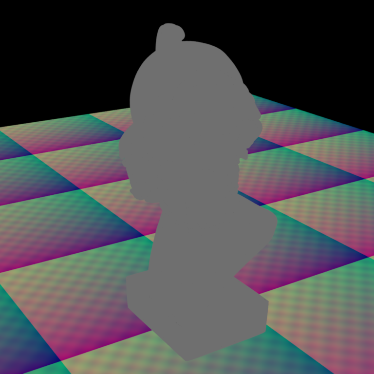
# Part 3: Analytic Sphere Shape
**Time spent on this task: 1 hour**
**Describe your implementation of Sphere and two functions.**
Here I do not substitute the ray equation into the sphere equation. Instead, I use the method given in class which can reject some ray in early stage.
The biggest problem I met is normalization. I first assume every vector is normalized here. But I can't pass the test. When I look through the forum, I find this problem and solve it.
**Sphere Analytic vs Mesh Comparison**
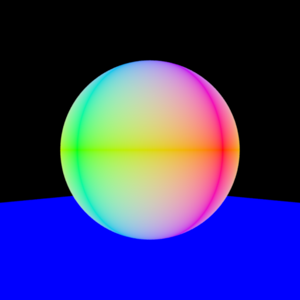
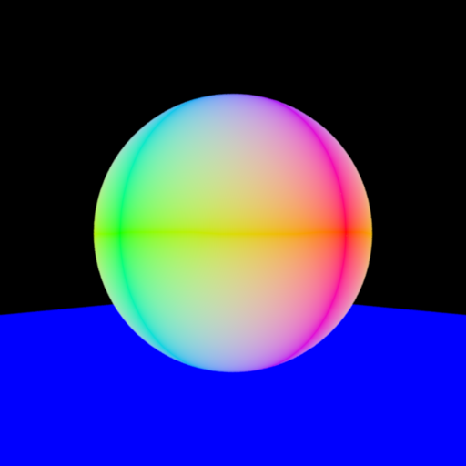
**Analytic Sphere UV Visualization**
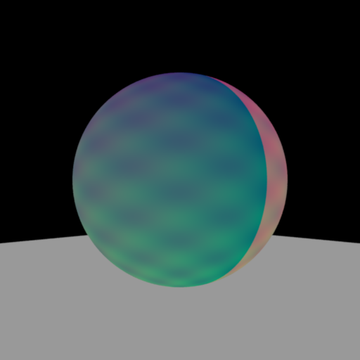
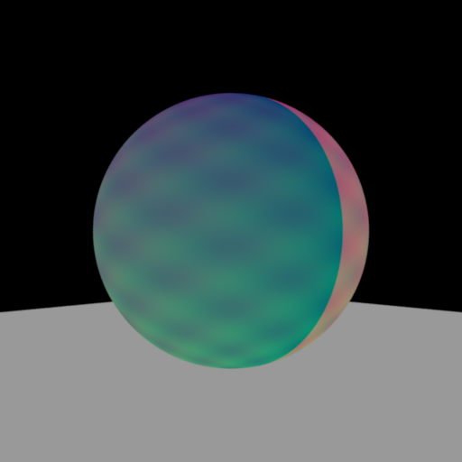
# Part 4: Direct Illumination Integrator
**Time spent on this task: 1 hour **
**Describe your implementation of Direct Illumination Integrator.**
I reference some contents in this website:
https://canvas.dartmouth.edu/files/2688983/download?download_frd=1. I learned some steps of direct integrator from its pseudo code.
About pointlight, the return value of these two function are the same: $\frac{power}{4 * π * distence^2}$. And since it is a pointlight, pdf is set to 1.
For direct illumination, as pbr book stated, the result for single light should be $$sample * BSDF * cos(w_i)$$. And just summing up all light will get the final result.
**Direct Illumination Comparison: Sponza**
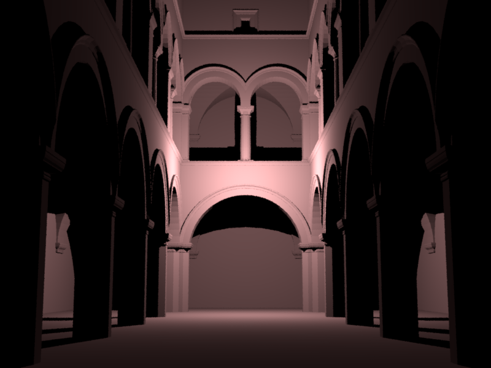
# Part 5: Texture Mapping
**Time spent on this task: 20 min**
**Describe your implementation of texture mapping.**
Here are steps for final color:
$$
x=\frac{x}{scale} - delta
$$
$$
y=\frac{y}{scale} - delta
$$
and then
$$
x = abs(int(floor(x))) % 2
$$
$$
y = abs(int(floor(y))) % 2
$$
Finally return
$$
\begin{cases}
color1 \quad \text{x==y}\\
color2 \quad \text{x!=y}
\end{cases}
$$
**Checkerboard Comparison: Mesh**
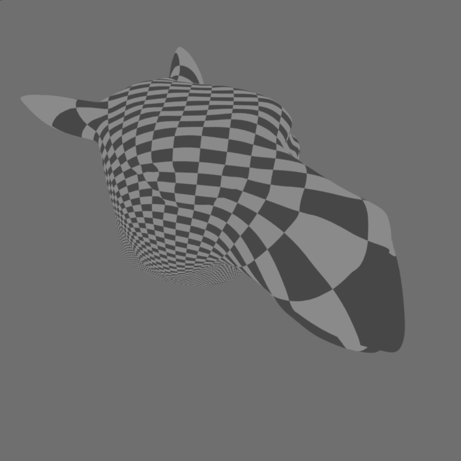
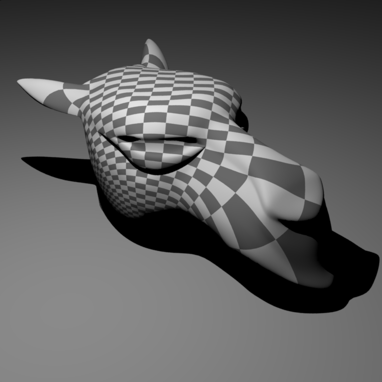
**Checkerboard Comparison: Sphere**
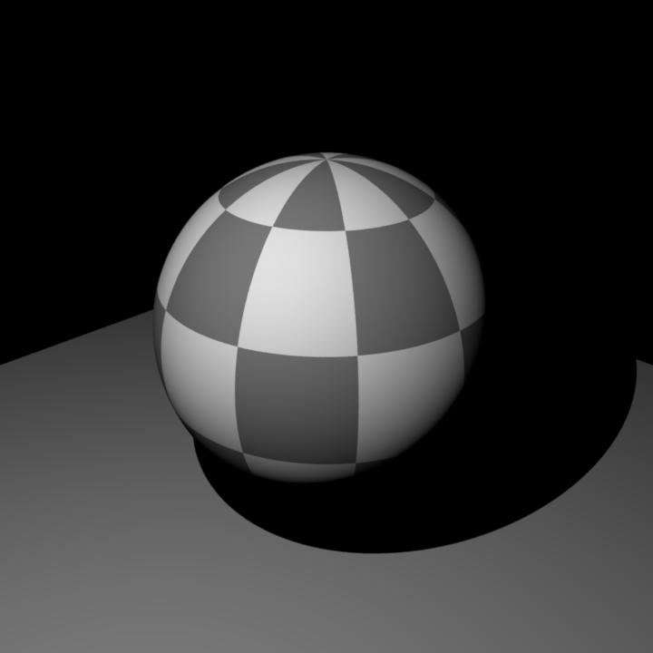
# Feedback
**Use this section to provide feedback about this assignment (each task, the handout, Nori, etc.). We appreciate your opinions to help improve future homeworks and projects.**
...
# Supplementary
* For each task, please note down the time you spent working through it and use at least a few sentences to describe your implementation. If applicable, also report the problems you encounter (e.g. whether or how it's solved, what is the difficult part).
* Please let us know to what extent your code is working (e.g. you only managed to work through part of this assignment, or your solution doesn't operate as expected in some corner cases). We encourage you to share your thinking process, and points will be granted based on your description even if the code is not 100% functioning.
* Nori generates both EXR and PNG format output. Please use PNG for image comparison in the report.
* This report template uses [Markdeep](https://casual-effects.com/markdeep/), which supports Markdown syntax in HTML file. For example usage, please refer to the [official demo document](https://casual-effects.com/markdeep/features.md.html).
* LaTeX is also supported for typing mathematical formulas:
$$
L_o(\mathbf{x}, \omega_o) = \int_{\Omega} L_i(\mathbf{x},\omega_i)\, f(\mathbf{x}, \omega_i, \omega_o)\, |\cos\theta_i|\, \mathrm{d}\omega_i
$$


 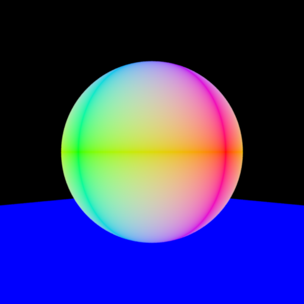
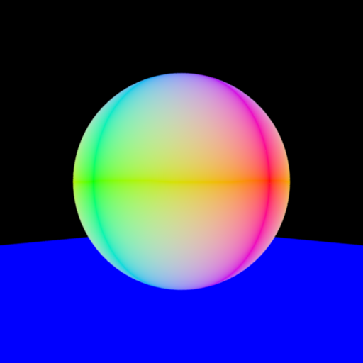
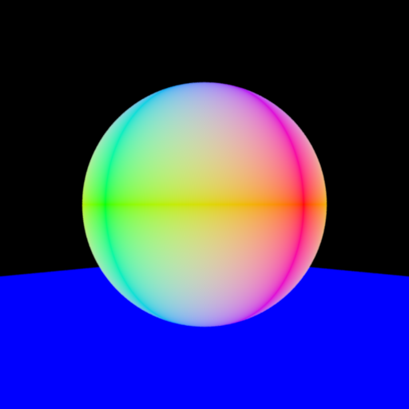
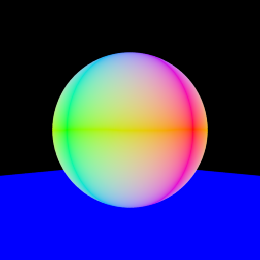
 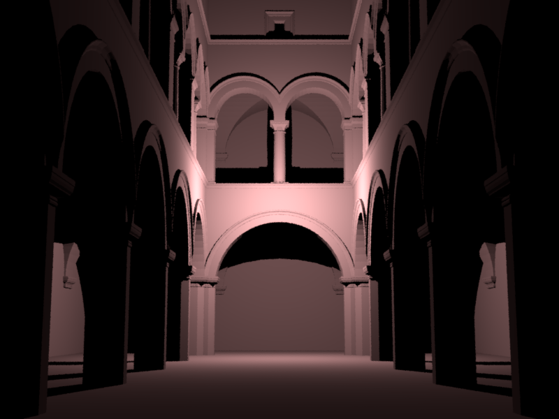
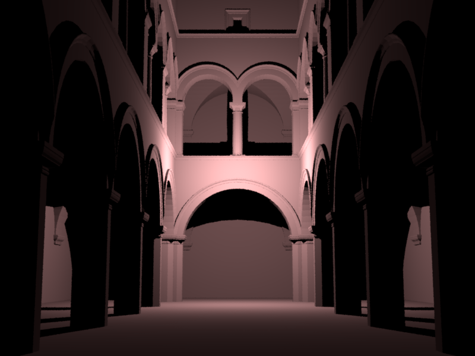